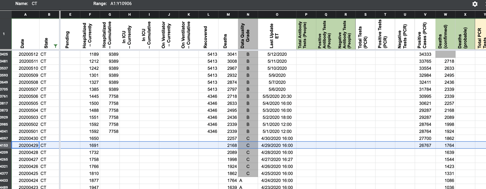

[CT] PCL Cases Historical
Issue number 617
pscsharon opened this issue on July 13, 2020 at 9:54 am
Labels PCL/SVP Historicals Backfill
We started recording CT’s confirmed cases on 
However, CT’s data set shows the state only separated confirmed and probable starting May 31st.
https://data.ct.gov/Health-and-Human-Services/COVID-19-Cases-Hospitalizations-and-Deaths-By-Coun/bfnu-rgqt
Here’s the XLS download. COVID-19_Cases__Hospitalizations__and_Deaths__By_County_.xlsx
Please confirm is the historicals between 4/29 and 5/31 are truly confirmed cases.
Comments
We decided to use the CT data for confirmed cases and total tests by report date. This confirmed case data only goes back to 6/6 and looks different than the data we had previous to those dates. We decided to remove the previous data and instead backfill the official data into the Positive Cases (PCR) column. Negatives were also adjusted accordingly. Meanwhile we took the opportunity to extend the Total Tests (PCR) column back much farther with CT’s official data.
We considered but didn’t use their confirmed cases by specimen collection, which goes back much farther but is incompatible with the values coming from future data entry.
Analysis spreadsheet, including old and new values: https://docs.google.com/spreadsheets/d/17rcCfHaT76c07Ghd-QCeKqzUlBep8eNGclTS7npnQ-I/edit#gid=616640974
CT publishes many datasets. In their COVID-19 Tests, Cases, Hospitalizations, and Deaths (Statewide) dataset, confirmed cases are reported starting 31-May. In the COVID-19 Cases by Date of First Positive Specimen dataset, we have positive PCR results dating back to March.
The later is given as a daily new, here’s a cumsum time series, CSV file as txt. COVID-19_Cases_by_Date_of_First_Positive_Specimen_cumsum.txt